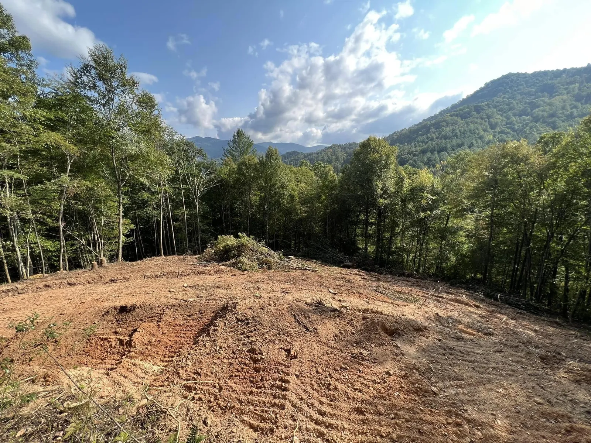
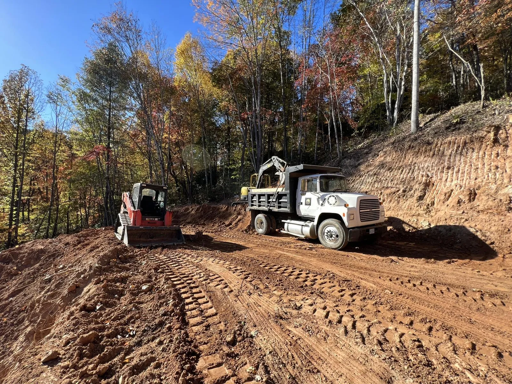

Rough Grading
The heavy pass that moves the bulk of the material, sets the general shape of the site, and gets pads, slopes, and drainage roughed in.
Precision grading that shapes the ground so water drains, pads sit level, and the next trade can build. Building pads, slope and crown, cut and fill, rough grade and final grade across Yancey, Mitchell, Avery, and the surrounding WNC counties.

Grading is where a site gets its shape. We grade for elevation, slope, crown, and drainage so the ground sheds water, the pad sits level, and nothing pools where it should not. From the rough grade that moves the bulk of the material to the tight final grade that sets the finished surface, we get the elevations right the first time.
We handle residential and commercial grading, and because we self-perform the whole site-work scope, the grade ties straight into the drainage, the driveway, and the pad. One accountable crew sets the ground so the next trade, whether that is a foundation, a paving company, or a builder, walks onto a site that is actually ready.
A full grading scope handled by one crew, from the first cut to a finished, build-ready surface.
The heavy pass that moves the bulk of the material, sets the general shape of the site, and gets pads, slopes, and drainage roughed in.
The tight pass that sets precise elevations and a smooth surface, ready for paving, foundation, seed, or landscaping.
Level, compacted pads for homes, shops, and commercial buildings, plus graded parking and lay-down areas built to spec.
Grading the slope, crown, and swales so water sheds off the pad and away from structures instead of pooling or cutting channels.
Balancing cut and fill across the site to keep it stable and move as little material off site as the job allows.
Material placed and compacted in lifts so the pad and subgrade hold up under what gets built on them.

We cut benches and pads into hillsides and balance cut and fill so the grade holds on ground that drops off fast.
Slope, crown, and swales are planned into the grade from the start, so water moves off the site instead of sitting on it.
A licensed commercial GC on the job, not a one-truck outfit. You deal with the owner.

Rough grading is the heavy work: cutting and filling the site to its general shape, setting the building pad elevation, and getting slopes and drainage roughed in. Final grading, or finish grading, is the tight pass at the end: smoothing the surface, setting precise elevations and crown, and shaping the ground so water drains and the site is ready for paving, seeding, or landscaping.
Yes. Water management is central to every grading job we do in the mountains. We grade slope, crown, and swales so water moves off the pad and away from structures instead of pooling or cutting channels. Getting the grade right is the first line of defense against erosion and water problems down the road.
Yes. Steep, rocky WNC ground is what we work in every day. We cut benches and pads into hillsides, balance cut and fill to keep the site stable, and plan drainage so the grade holds. This is mountain grading, not flatland grading, and it is what we are set up for.
It depends on how much material has to move, the slope and rock on the site, how far off the existing grade you are, and whether it is a rough grade or a tight final grade. The honest answer comes from walking the site. We look at the ground, talk through what you need, and give you a real number.
Tell us about the property and the scope. We'll get back fast.